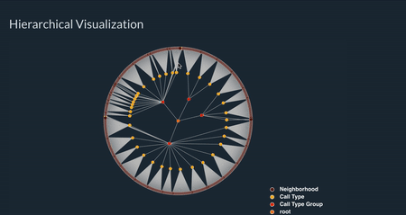

Encoding
For this visualization, level or height of hierarchical data is encoded using color. each node represent one row in dataset. Each row is converted into hierarchical tree data using d3.stratify().
Wrangling
Original dataset is updating everyday. This dataset consist of 996 rows. Dataset is modified using Google sheet and javascript to convert it into hierarchical dataset. Each row is given unique id and a nodeId which generates parent for each record
Interactivity
Implemented Details on Demand and zooming technique as an interactivity. Here is the .gif of it to show demonstration of it.
Conclusion
From this visualization, it shows Node name and count of incidents under it, it is conclude that there are various call type group and each of them is further divided into various call-type categories. Each of these categories has incidents in different Neighborhooods. Here each node shows total number of incidents within that call-type group and call-type category. This shows that there are more cases in market and mission area.